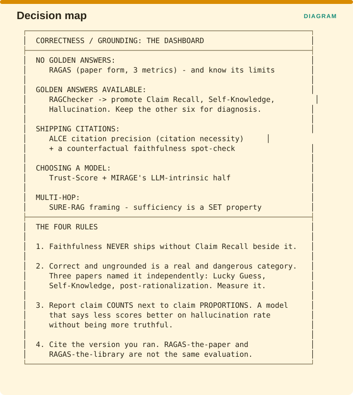

Measuring Retrieval › C.10 Correctness - summary card

What to run depends on what you have. With no golden answers, use RAGAS in its paper form of three metrics, knowing the limits §C.3 sets out. With golden answers available, use RAGChecker and promote Claim Recall, Self-Knowledge and Hallucination to the dashboard while keeping the other six for diagnosis. If you ship citations to users, add ALCE’s citation precision, which measures necessity, plus a counterfactual spot-check for faithfulness. When choosing a model, use Trust-Score together with the model-intrinsic half of MIRAGE. If your questions are multi-hop, adopt SURE-RAG’s framing, because sufficiency is a property of the set.
Four rules carry out of this part.
First, faithfulness never ships without Claim Recall printed beside it.
Second, correct and ungrounded is a real and dangerous category. Three papers named it independently, as Lucky Guess, as Self-Knowledge and as post-rationalization, so measure it rather than assuming your grounding scores already cover it.
Third, report claim counts next to claim proportions, because a model that says less scores better on hallucination rate without having become any more truthful.
Fourth, cite the version you actually ran, since RAGAS the paper and RAGAS the library are not the same evaluation.
Measuring Retrieval · Madhava Gaikwad · First edition, September 2026